library(disperseR)
library(ggplot2)
theme_set(theme_minimal(base_size = 11) +
theme(panel.grid.minor = element_blank(), axis.text = element_text(size = 8)))Why movement phases?
Dispersal links populations: it drives gene flow, the colonisation of empty habitat and the persistence of metapopulations (Bowler & Benton 2005; Clobert et al. 2012). GPS tracks of dispersing animals, however, mix several processes. An individual may explore after leaving its natal area or after being released, stop for a few hours or days on the way, settle temporarily, make excursions and come back, or move between areas it already knows (Beier 1995; Zimmermann et al. 2005). Each of these movement phases responds to different decisions and takes place at a scale of days to weeks (Nathan et al. 2008; Getz 2022).
Separating them matters because animals use the landscape differently in each phase. Habitat selection and the response to roads and human infrastructure differ between resident and dispersing individuals, and even between types of non-residential movement (Gastón et al. 2016; Cisneros-Araujo et al. 2025). Connectivity models built from all locations together, or from all locations outside home ranges, can therefore misrepresent how permeable the landscape is for dispersers (Elliot et al. 2014). Short stops during long movements act as stepping stones that make long-distance dispersal possible (Saura et al. 2014). In reintroductions, the length of the exploratory phase after release and the time until settlement are key indicators of success (Berger-Tal & Saltz 2014; Cisneros-Araujo et al. 2026a).
Many methods segment tracks into behavioural units (Edelhoff et al. 2016; Gurarie et al. 2016). Hidden Markov models (HMM) fitted to step lengths and turning angles are among the most widely used (Morales et al. 2004; Langrock et al. 2012; McClintock & Michelot 2018). At fine temporal resolution, however, their states mostly describe activity modes, such as resting or moving, rather than movement phases: a dispersing animal also rests every day, and a resident one also moves within its home range (Getz 2022; Cisneros-Araujo et al. 2026b). Identifying phases requires information on space use over longer periods, such as residence time or spatial clustering (Barraquand & Benhamou 2008; Gastón et al. 2016; Patin et al. 2020).
disperseR combines both scales. HMM states describe the
activity of each location. Density-based spatial clustering (DBSCAN;
Ester et al. 1996; Hahsler et al. 2019), together with minimum duration
and activity criteria, identifies area-restricted
phases (ARP), such as home ranges, transient residences or long
stays. Short stops are not ARPs and remain part of the movement.
Finally, each movement between ARPs is classified according to the
network of ARPs the individual has visited so far.
The classification
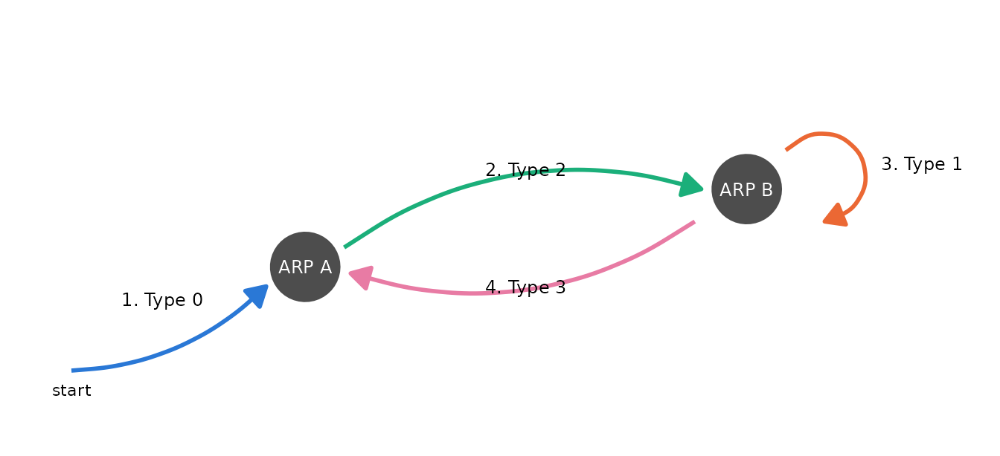
| Phase | Meaning | Usual terms (approximate) |
|---|---|---|
| ARP | Area-restricted phase | home range, transient residence, settlement |
| Type 0 | Unanchored movement, before the first ARP | natal or post-release exploration |
| Type 1 | Loop: leaves an ARP and comes back to the same ARP | excursion, foray |
| Type 2 | Network expansion: from a known ARP to a new ARP | dispersal, transition to a new residence |
| Type 3 | Internal transit: between two previously visited ARPs | return or movement between known residences; migration |
The equivalences in the last column are approximate. For example, a Type 2 movement may end in a transient residence that the animal later abandons. Whether an ARP is a home range or a temporary stop depends on how long it lasts and on the questions of the study, which is why the duration criteria are arguments of the functions.
This vignette has two parts. Part I goes through the workflow with a simulated data set. Part II shows how the main arguments change the classification, and why.
Part I. The workflow
The example data
sim_tracks contains hourly GPS fixes of five simulated
individuals, with timing jitter and about 10% of fixes missing. The
animals are active at night and rest during the day, also while
dispersing. Directed movements follow meandering routes, and some
include short stopovers of half a day to a day. The column
behaviour stores what each animal was really doing in the
simulation, so we can check the results:
- M01 settles in an area made of two nearby patches and shuttles between them. It then moves to a second area, with a stopover on the way, makes a looping excursion, and returns to its first area.
- F02 settles in one area, stays 2.5 days in a second one, and settles in two more, with a stopover before the last one.
- M03 settles in one area and then makes a long transit, during which the collar fails for about two days.
- F04 has a home range made of two nearby patches and makes two looping excursions from it.
- F05 explores with several stopovers, settles for a few days, leaves again, and the tracking ends while it is still moving.
head(sim_tracks)
#> ID timestamp x y sex behaviour
#> 1 M01 2024-03-01 12:00:52 414009.7 4290987 male travel
#> 2 M01 2024-03-01 14:01:39 414028.4 4290984 male travel
#> 3 M01 2024-03-01 15:59:22 414036.5 4290983 male travel
#> 4 M01 2024-03-01 17:02:51 414033.6 4290983 male travel
#> 5 M01 2024-03-01 17:56:32 414046.8 4290967 male travel
#> 6 M01 2024-03-01 19:04:12 414140.5 4291042 male travel
table(sim_tracks$ID, sim_tracks$behaviour)
#>
#> stay stopover travel
#> F02 556 20 162
#> F04 558 0 188
#> F05 141 83 186
#> M01 760 55 240
#> M03 318 0 123draw.track() draws the tracks, optionally coloured by
any column:
behaviour_cols <- c(stay = "#4d4d4d", stopover = "#eb6834", travel = "#2a78d6")
draw.track(sim_tracks, colour.col = "behaviour", time.col = "timestamp", km = TRUE,
palette = behaviour_cols)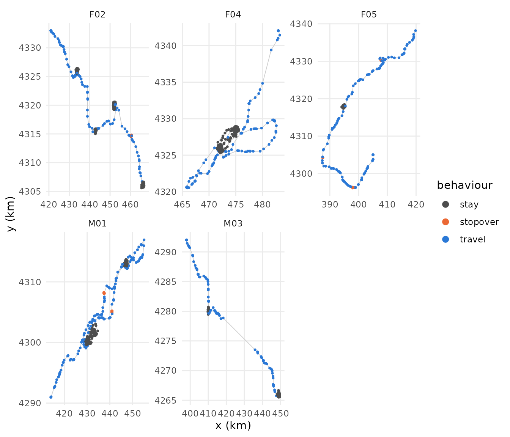
The fixes are irregular, and M03 has a gap of about two days:
dt_h <- unlist(tapply(as.numeric(sim_tracks$timestamp), sim_tracks$ID,
function(t) diff(sort(t)) / 3600))
summary(dt_h)
#> Min. 1st Qu. Median Mean 3rd Qu. Max.
#> 0.8361 0.9575 1.0083 1.1321 1.0717 48.9328
ggplot(data.frame(dt = dt_h[dt_h <= 6]), aes(dt)) +
geom_histogram(binwidth = 1 / 6, boundary = 0, fill = "#2a78d6", colour = "white") +
scale_x_continuous(breaks = 0:6) +
labs(x = "Interval between fixes (hours)", y = "Count", title = "Intervals up to 6 hours")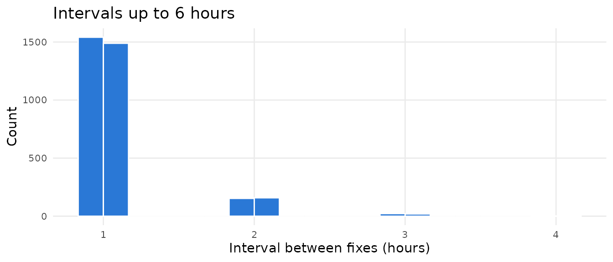
1. Splitting tracks at monitoring gaps
A continuous-time model would interpolate across the gap of M03 and
create locations that were never observed.
divide.track.by.gap() splits each track wherever two
consecutive fixes are more than gap.days apart.
gap.days can be a single value or a named list with one
value per individual:
split_trk <- divide.track.by.gap(sim_tracks, ids = "ID", time.col = "timestamp",
gap.days = 1)
table(split_trk$id_split)
#>
#> F02_1 F04_1 F05_1 M01_1 M03_1 M03_2
#> 738 746 410 1055 223 218
draw.track(split_trk, colour.col = "id_split", ids = "M03", time.col = "timestamp",
km = TRUE, palette = c(M03_1 = "#2a78d6", M03_2 = "#eb6834"))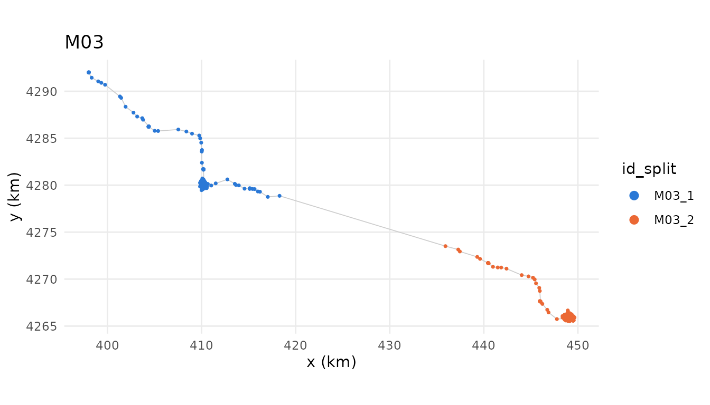
2. Regularising the tracks
resample.ctmm() fits a continuous-time movement model
(Calabrese et al. 2016) to each track and predicts locations every
tint seconds. Using id_split as identifier
resamples each segment separately, so nothing is predicted inside the
gap. static.cols copies individual attributes to the
output, and the output coordinates must be in metres:
reg <- resample.ctmm(as.data.frame(split_trk), tint = 3600, ids = "id_split",
timestamp = "timestamp", proj.in = 25830,
static.cols = "sex", verbose = FALSE)Fitting the models takes a few minutes. Their result, together with
the HMM states of the next step, is stored in
sim_states:
head(sim_states)
#> ID id_split time time_s x y step
#> 1 F02 F02_1 2024-03-01 11:56:18 1709294178 421007.4 4332970 11.328569
#> 2 F02 F02_1 2024-03-01 12:56:18 1709297778 421003.0 4332981 4.452588
#> 3 F02 F02_1 2024-03-01 13:56:18 1709301378 420998.6 4332980 14.710357
#> 4 F02 F02_1 2024-03-01 14:56:18 1709304978 420983.9 4332982 10.645083
#> 5 F02 F02_1 2024-03-01 15:56:18 1709308578 420977.4 4332973 45.049463
#> 6 F02 F02_1 2024-03-01 16:56:18 1709312178 420933.4 4332964 27.676805
#> angle state sex
#> 1 NA 2 female
#> 2 1.2054030 2 female
#> 3 -0.1107382 2 female
#> 4 0.9873524 2 female
#> 5 -0.6900414 2 female
#> 6 2.9844871 2 female3. Behavioural states
fitHMM.wrap() fits an HMM with gamma step lengths and
wrapped Cauchy turning angles. State 1 is Transit and state 2
is Encamped. Because our animals rest every day, we add a
third, stationary state (stationary = TRUE), which
is merged into the encamped state after fitting. Part II shows what
happens without it.
The model is fitted by segment (id_split), so that no
step crosses the gap of M03. fitHMM.wrap() returns the
identifier in a column named ID, which here holds the
segment:
reg <- sim_states[, c("id_split", "time", "x", "y", "sex")]
hmm <- fitHMM.wrap(reg, ids = "id_split", stationary = TRUE,
mean.step.1 = 700, sd.step.1 = 400,
mean.step.2 = 150, sd.step.2 = 100,
ang.con.1 = 0.7, ang.con.2 = 0.1)Fitting the model takes about half a minute. To keep this vignette quick to build, the two models it uses were fitted beforehand with the code shown, and their results are loaded from a file. Everything else runs as you read it.
hmm$models$global_model$mle$step
#> Transit Encamped Stationary
#> mean 652.7565 154.7892 15.230356
#> sd 389.3305 92.7620 9.155337To continue by individual, the segment number is removed from
ID:
st <- hmm$data
st$id_split <- as.character(st$ID)
st$ID <- sub("_[0-9]+$", "", st$id_split)
st$state_name <- ifelse(st$state == 1, "Transit", "Encamped")
draw.track(st, colour.col = "state_name", km = TRUE,
palette = c(Transit = "#eb6834", Encamped = "#2a78d6"))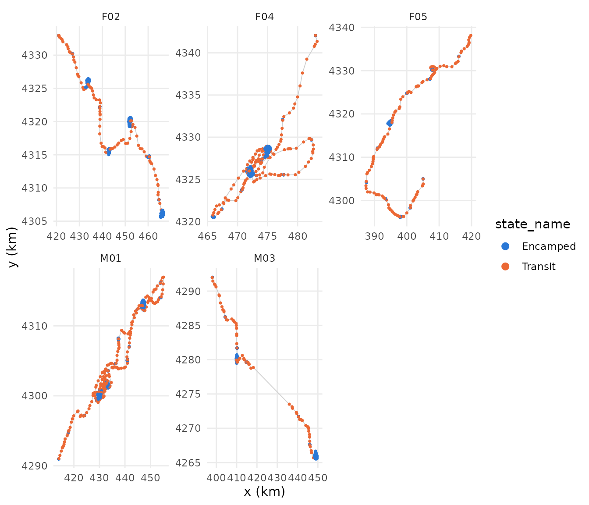
The model can also be fitted to each individual or segment
(mode = "individual") or to groups defined by a column
(mode = "groups").
4. Area-restricted phases
DBSCAN groups locations that are closer than a distance
epsilon. get.epsilon() estimates it from the
step lengths. By default it is the step length at which the densities of
the two states intersect:
eps <- get.epsilon(sim_states)
eps
#> [1] 238.4065
draw.step.densities(sim_states, threshold = eps)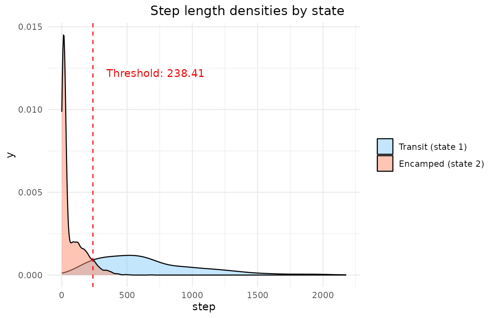
get.arp() runs DBSCAN on each individual and keeps as
ARPs the clusters that last at least delta.days (from their
first to their last location) and have less than pct.state1
of their locations in the transit state:
arp <- get.arp(sim_states, epsilon = eps, delta.days = 2, pct.state1 = 0.2)
arp
#> <disperseR object>
#> Individuals: 5 | Locations: 3788
#> Steps: ARP clusters (get.arp)
#> ARP clusters per individual:
#> F02 F04 F05 M01 M03
#> 4 2 1 4 2
arp$arp_clusters$F02
#> # A tibble: 4 × 6
#> cluster_id start end dur_days pct_state1 n
#> <int> <dttm> <dttm> <dbl> <dbl> <int>
#> 1 4 2024-03-03 18:56:18 2024-03-11 19:56:18 8.04 0.0103 194
#> 2 7 2024-03-13 18:56:18 2024-03-16 17:56:18 2.96 0.0139 72
#> 3 9 2024-03-17 18:56:18 2024-03-26 19:56:18 9.04 0.00917 218
#> 4 13 2024-03-29 20:56:18 2024-04-04 20:56:18 6 0 142
ad <- arp$data
ad$cluster <- ifelse(ad$arp, paste("ARP", ad$cluster_id), "not ARP")
arp_ids <- sort(unique(ad$cluster_id[ad$arp]))
cl_cols <- c("not ARP" = "grey80",
setNames(rep(c("#2a78d6", "#eb6834", "#1baf7a", "#6250d6", "#e87ba4"),
length.out = length(arp_ids)), paste("ARP", arp_ids)))
draw.track(ad, colour.col = "cluster", km = TRUE, palette = cl_cols) +
theme(legend.position = "none")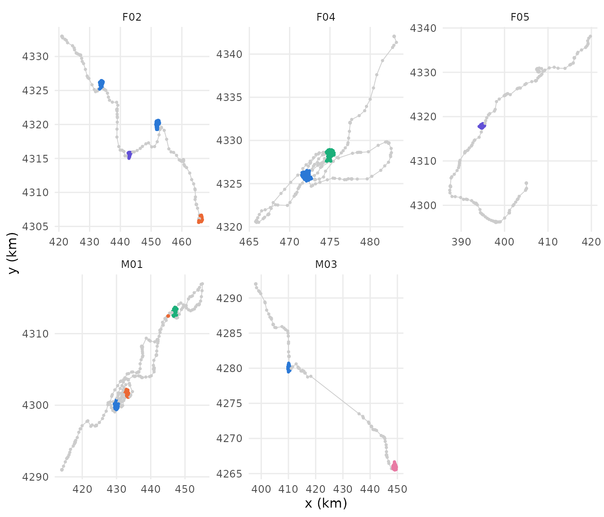
Daytime rests and stopovers during the movements also form small
clusters of encamped locations, but they last less than
delta.days and are not ARPs.
5. Linking ARP clusters
M01 and F04 move back and forth between two nearby patches, and
DBSCAN finds each patch as a separate cluster. Without linking, every
trip between them would be a separate movement. link.arp()
joins ARP blocks separated by less than thres seconds. The
locations in between are flagged as arp_link, and the
linked clusters share a linked_clusters identifier:
linked <- link.arp(arp, thres = 24 * 3600)
table(linked$data$ID, linked$data$arp_link)
#>
#> FALSE TRUE
#> F02 823 3
#> F04 791 42
#> F05 449 0
#> M01 1143 44
#> M03 493 0draw.linked.clusters() shows each ARP cluster as a
convex hull, the links as lines and the linking locations as stars. It
returns a ggplot object, so it can be zoomed in like any
other plot:
draw.linked.clusters(linked, ids = "F04", grid_spacing = 1000)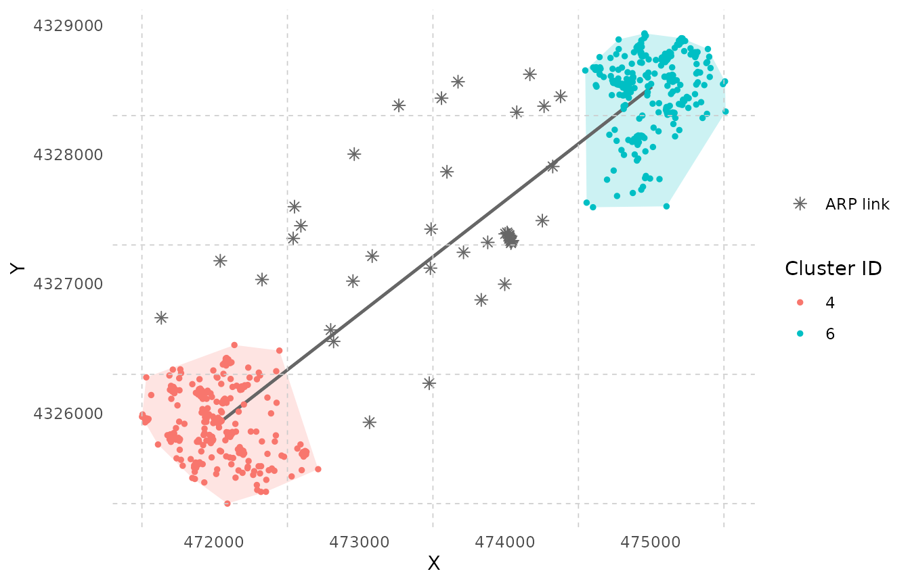
m01_arp <- linked$data[linked$data$ID == "M01" & linked$data$linked_clusters == "arp_1", ]
draw.linked.clusters(linked, ids = "M01", grid_spacing = 1000) +
coord_cartesian(xlim = range(m01_arp$x) + c(-500, 500),
ylim = range(m01_arp$y) + c(-500, 500))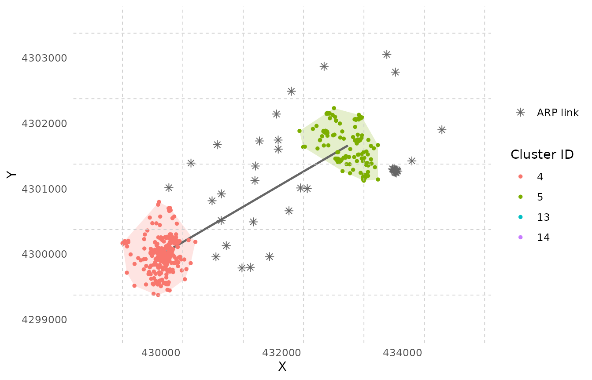
6. Movement phases
mov <- class.mov(linked)
mov
#> <disperseR object>
#> Individuals: 5 | Locations: 3788
#> Steps: ARP clusters (get.arp), Linked ARPs (link.arp), Movement phases (class.mov)
#> ARP clusters per individual:
#> F02 F04 F05 M01 M03
#> 4 2 1 4 2
#> Locations per phase:
#> ARP Type 0 Type 1 Type 2 Type 2 or Type 1 Type 3
#> F02 629 55 0 142 0 0
#> F04 649 54 130 0 0 0
#> F05 159 161 0 0 129 0
#> M01 854 63 72 103 0 95
#> M03 364 55 0 74 0 0The phases recover the simulated behaviour. M01 expands its network
to a second area (Type 2), makes a loop (Type 1) and returns to its
first area (Type 3). F04 makes two loops from its home range, and the
tracking of F05 ends during a movement whose destination is unknown
("Type 2 or Type 1"):
draw.track(mov, colour.col = "phase", km = TRUE)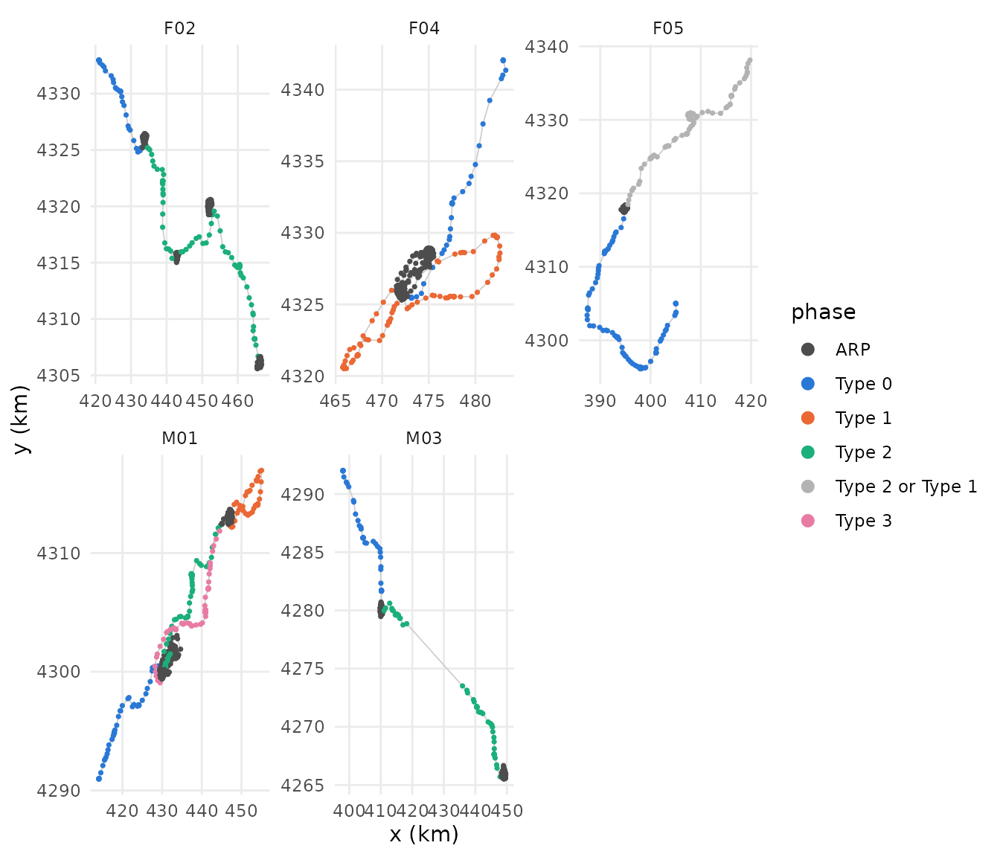
draw.track(mov, colour.col = "phase", ids = "M01", colour.path = TRUE, km = TRUE)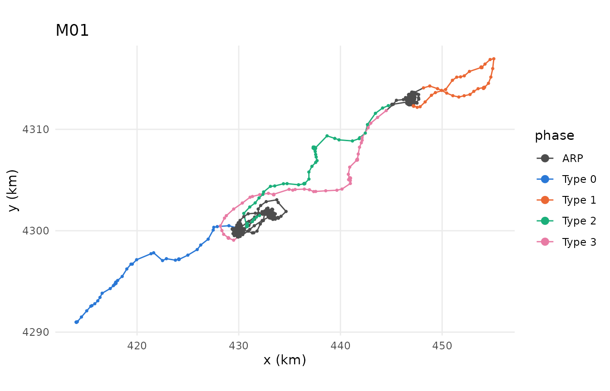
draw.track(mov, colour.col = "phase", ids = "F05", colour.path = TRUE, km = TRUE)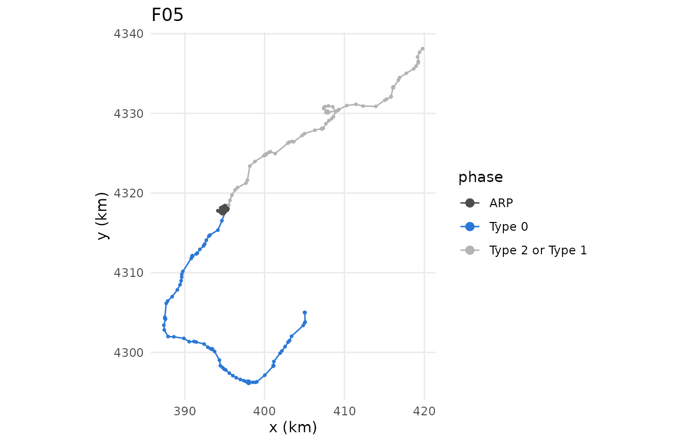
draw.timeline() shows the phases along time. Gaps in the
monitoring are left empty:
draw.timeline(mov)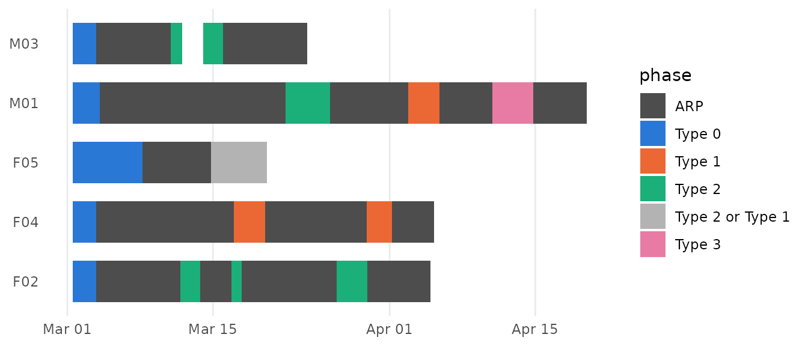
phase.summary() turns the classification into a table
with one row per phase, ready for further analysis:
ph <- phase.summary(mov)
head(ph[, c("ID", "phase", "from", "to", "start", "duration_days", "distance_km")], 8)
#> ID phase from to start duration_days distance_km
#> 1 F02 Type 0 <NA> arp_1 2024-03-01 11:56:18 2.2500000 15.736831
#> 2 F02 ARP <NA> <NA> 2024-03-03 18:56:18 8.0416667 17.682587
#> 3 F02 Type 2 arp_1 arp_2 2024-03-11 20:56:18 1.8750000 16.005406
#> 4 F02 ARP <NA> <NA> 2024-03-13 18:56:18 2.9583333 6.535382
#> 5 F02 Type 2 arp_2 arp_3 2024-03-16 18:56:18 0.9583333 10.749695
#> 6 F02 ARP <NA> <NA> 2024-03-17 18:56:18 9.0416667 20.905722
#> 7 F02 Type 2 arp_3 arp_4 2024-03-26 20:56:18 2.9583333 20.708892
#> 8 F02 ARP <NA> <NA> 2024-03-29 20:56:18 6.0000000 13.443410
# Distance travelled outside ARPs and time until the first ARP
data.frame(
non_arp_km = round(tapply(ph$distance_km[ph$phase != "ARP"],
ph$ID[ph$phase != "ARP"], sum), 1),
days_to_first_arp = round(tapply(ph$duration_days[ph$phase == "Type 0"],
ph$ID[ph$phase == "Type 0"], sum), 1)
)
#> non_arp_km days_to_first_arp
#> F02 63.2 2.2
#> F04 58.0 2.2
#> F05 84.5 6.7
#> M01 91.6 2.6
#> M03 61.2 2.27. Transferring the classification
transfer.disperseR() copies the classification to
another data set, such as the original fixes, by matching each row with
a location of the disperseR object. max.diff
(seconds) leaves rows without a close match as NA:
raw_phases <- transfer.disperseR(sim_tracks, mov, id.col = "ID",
time.col = "timestamp", max.diff = 3600)
table(raw_phases$ID, raw_phases$phase)
#>
#> ARP Type 0 Type 1 Type 2 Type 2 or Type 1 Type 3
#> F02 566 48 0 124 0 0
#> F04 580 47 119 0 0 0
#> F05 143 146 0 0 121 0
#> M01 766 55 61 93 0 80
#> M03 323 51 0 67 0 0Part II. How choices change the classification
The classification depends on the arguments, and the right values depend on the species, the sampling interval and the question. This part shows the effect of the main choices on the same data.
To compare the results with what really happened, we copy the simulated behaviour to the regular locations (nearest fix in time):
truth_of <- function(d) {
vapply(seq_len(nrow(d)), function(i) {
raw <- sim_tracks[sim_tracks$ID == d$ID[i], ]
raw$behaviour[which.min(abs(as.numeric(raw$timestamp) - d$time_s[i]))]
}, character(1))
}
truth <- truth_of(mov$data)
phase_sequence <- function(m) {
sapply(split(m$data$phase, m$data$ID), function(p) paste(rle(p)$values, collapse = " > "))
}
n_clusters <- function(a) sapply(a$arp_clusters, nrow)HMM states are not movement phases
A common shortcut is to treat runs of encamped HMM states as
residences. The encamped state, however, includes every daytime rest and
every stopover. Here we compare three views of the same locations: the
simulated behaviour, the HMM state and the disperseR
phase:
resident <- data.frame(
truth = truth == "stay",
hmm = mov$data$state == 2,
disperseR = mov$data$phase == "ARP"
)
# Proportion of the locations of each simulated behaviour classified as resident
round(sapply(resident[, -1], function(r) tapply(r, truth, mean)), 2)
#> hmm disperseR
#> stay 0.96 0.99
#> stopover 0.97 0.00
#> travel 0.50 0.07
# Number of resident episodes per individual
n_runs <- function(r, id) tapply(r, id, function(z) sum(rle(z)$values))
cbind(truth = n_runs(resident$truth, mov$data$ID),
hmm = n_runs(resident$hmm, mov$data$ID),
disperseR = n_runs(resident$disperseR, mov$data$ID))
#> truth hmm disperseR
#> F02 4 11 4
#> F04 3 17 3
#> F05 1 11 1
#> M01 4 24 4
#> M03 2 8 2The HMM labels much of the time spent travelling as encamped (the
daily rests and the stopovers) and splits each dispersal into many short
“residences”. disperseR keeps the stopovers and rests
inside the movements:
cmp <- rbind(
data.frame(ID = "1. simulated", time = mov$data$time, status = truth),
data.frame(ID = "2. HMM state", time = mov$data$time,
status = ifelse(resident$hmm, "stay", "travel")),
data.frame(ID = "3. disperseR", time = mov$data$time,
status = ifelse(resident$disperseR, "stay", "travel"))
)
cmp <- cmp[rep(mov$data$ID, 3) == "F05", ]
draw.timeline(cmp, phase.col = "status", palette = behaviour_cols) +
labs(title = "F05: resident (stay) or not")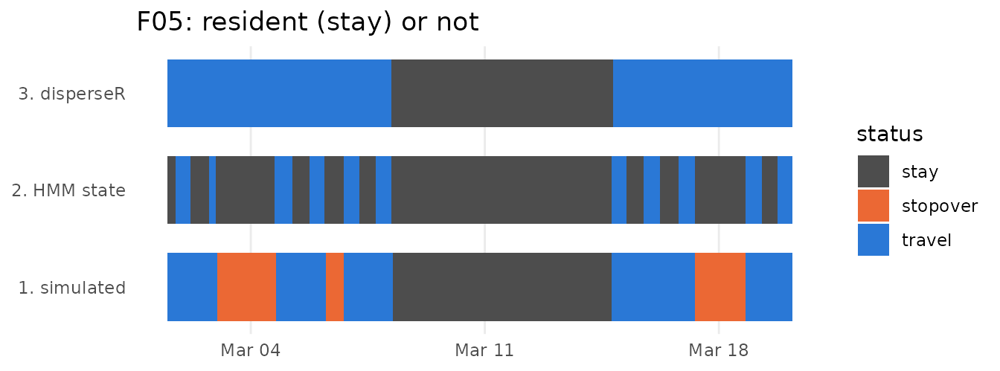
Activity modes or movement modes: the HMM states
What the HMM states capture depends on the number of states and on the starting values. A two-state model started near resting and moving values separates activity modes: daytime rests on one side, and every movement, including the movements inside home ranges, on the other:
hmm2 <- fitHMM.wrap(reg, ids = "id_split",
mean.step.1 = 300, sd.step.1 = 300,
mean.step.2 = 20, sd.step.2 = 20,
ang.con.1 = 0.5, ang.con.2 = 0.1)
st2 <- hmm2$data
st2$ID <- sub("_[0-9]+$", "", as.character(st2$ID))
hmm2$models$global_model$mle$step
#> Transit Encamped
#> mean 309.7578 15.138028
#> sd 280.9465 8.987033
eps2 <- get.epsilon(st2)
c(three_states = eps, two_states = eps2)
#> three_states two_states
#> 238.40650 40.49219The step-length densities now cross at a few tens of metres, and
DBSCAN with that epsilon only groups the locations of each
resting site. The ARPs break into many small clusters and the
classification fills with spurious loops:
arp2 <- get.arp(st2, epsilon = eps2, delta.days = 2, pct.state1 = 0.5)
rbind(three_states = n_clusters(arp),
two_states = n_clusters(arp2))
#> F02 F04 F05 M01 M03
#> three_states 4 2 1 4 2
#> two_states 7 15 2 15 4
phase_sequence(class.mov(link.arp(arp2, thres = 24 * 3600)))[c("M01", "F02")]
#> M01
#> "Type 0 > ARP > Type 1 > ARP > Type 1 > ARP > Type 1 > ARP > Type 2 > ARP > Type 1 > ARP > Type 1 > ARP > Type 1 > ARP > Type 3 > ARP > Type 2 or Type 1"
#> F02
#> "Type 0 > ARP > Type 2 > ARP > Type 1 > ARP > Type 1 > ARP > Type 1 > ARP > Type 1 > ARP > Type 2 > ARP > Type 1 > ARP > Type 1 > ARP > Type 2 or Type 1"The three-state model, in contrast, keeps the movements inside the ARPs in the encamped state, so the encamped locations describe the space used during each phase. Inspecting the estimated step lengths of each state helps to decide how many states the model needs and what they mean (Pohle et al. 2017).
The distance threshold epsilon
get.epsilon() offers three methods
("density", "mean" and "median")
that can be applied to all data, per individual or per group:
eps_tab <- sapply(c("density", "mean", "median"), function(m) {
c(global = get.epsilon(sim_states, method = m),
unlist(get.epsilon(sim_states, method = m, mode = "individual", ids = "ID")),
unlist(get.epsilon(sim_states, method = m, mode = "groups", group.col = "sex")))
})
round(eps_tab)
#> density mean median
#> global 238 167 38
#> F02 286 154 44
#> F04 238 164 36
#> F05 242 224 43
#> M01 227 161 35
#> M03 225 155 41
#> female 252 173 39
#> male 223 160 36A smaller epsilon splits an area into more clusters, and
a larger one merges nearby areas or joins stopovers to the route:
eps_values <- c(eps / 4, eps / 2, eps, 2 * eps, 4 * eps)
eps_effect <- sapply(eps_values, function(e)
n_clusters(get.arp(sim_states, epsilon = e, delta.days = 2, pct.state1 = 0.2)))
colnames(eps_effect) <- paste0(round(eps_values), " m")
eps_effect
#> 60 m 119 m 238 m 477 m 954 m
#> F02 17 4 4 4 4
#> F04 25 2 2 1 1
#> F05 4 1 1 2 1
#> M01 20 5 4 2 2
#> M03 13 2 2 2 2Duration, activity and minimum points
delta.days decides how long a cluster must last to be an
ARP. It is measured from the first to the last location of the cluster,
so patches visited repeatedly last longer than each single visit. The
stay of 2.5 days of F02 is an ARP with delta.days = 2 but
not with delta.days = 3. A lenient pct.state1
accepts clusters at the border of the areas that include transit
locations. minPts decides which locations are core points
of a cluster: a larger value can split loosely connected areas, such as
the patches of M01:
n_arp <- function(delta = 2, pct = 0.2, minPts = 3) {
n_clusters(get.arp(sim_states, epsilon = eps, delta.days = delta,
pct.state1 = pct, minPts = minPts))
}
rbind("delta.days = 0.5" = n_arp(delta = 0.5),
"delta.days = 1" = n_arp(delta = 1),
"delta.days = 2" = n_arp(delta = 2),
"delta.days = 3" = n_arp(delta = 3),
"pct.state1 = 0.5" = n_arp(pct = 0.5),
"minPts = 10" = n_arp(minPts = 10))
#> F02 F04 F05 M01 M03
#> delta.days = 0.5 10 9 9 15 7
#> delta.days = 1 5 2 3 5 2
#> delta.days = 2 4 2 1 4 2
#> delta.days = 3 3 2 1 4 2
#> pct.state1 = 0.5 4 3 1 5 2
#> minPts = 10 4 2 1 5 2With a short delta.days, stopovers become ARPs and the
movements are cut into pieces. The proportion of stopover locations
classified as ARP:
mov_short <- class.mov(link.arp(get.arp(sim_states, epsilon = eps, delta.days = 0.5,
pct.state1 = 0.2), thres = 24 * 3600))
rbind("delta.days = 0.5" = tapply(mov_short$data$phase[truth == "stopover"] == "ARP",
mov_short$data$ID[truth == "stopover"], mean),
"delta.days = 2" = tapply(mov$data$phase[truth == "stopover"] == "ARP",
mov$data$ID[truth == "stopover"], mean))
#> F02 F05 M01
#> delta.days = 0.5 1 1 1
#> delta.days = 2 0 0 0Linking threshold
thres decides which short trips out of an ARP are links
and which are movements. The number of Type 1 and Type 3 movements drops
quickly as thres grows, until it reaches the duration of
the shuttles between patches. It then stays stable while
thres is shorter than the loops and the movements between
areas:
thres_h <- c(0, 2, 4, 6, 9, 12, 18, 24, 36, 48, 72, 96)
counts <- do.call(rbind, lapply(thres_h, function(h) {
p <- phase.summary(suppressWarnings(class.mov(link.arp(arp, thres = h * 3600))))
data.frame(thres = h, phase = c("Type 1", "Type 2", "Type 3"),
n = as.vector(table(factor(p$phase, c("Type 1", "Type 2", "Type 3")))))
}))
ggplot(counts, aes(thres, n, colour = phase)) +
geom_line(linewidth = 0.8) + geom_point(size = 2) +
geom_vline(xintercept = 24, linetype = "dashed", colour = "grey50") +
scale_colour_manual(values = c("Type 1" = "#eb6834", "Type 2" = "#1baf7a",
"Type 3" = "#e87ba4"), name = NULL) +
scale_x_continuous(breaks = c(0, 12, 24, 48, 72, 96)) +
labs(x = "thres (hours)", y = "Number of movements (all individuals)")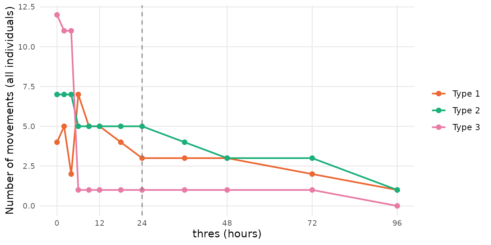
Without linking (thres = 0), every shuttle between the
two patches of M01 and F04 becomes a movement. With a very long
thres, the loops, and even the movement of M01 between its
two areas, are absorbed into the ARPs:
thres_seq <- sapply(c(0, 24, 96), function(h)
phase_sequence(suppressWarnings(class.mov(link.arp(arp, thres = h * 3600))))[c("M01", "F04")])
colnames(thres_seq) <- paste("thres =", c(0, 24, 96), "h")
thres_seq
#> thres = 0 h
#> M01 "Type 0 > ARP > Type 2 > ARP > Type 3 > ARP > Type 3 > ARP > Type 3 > ARP > Type 3 > ARP > Type 2 > ARP > Type 1 > ARP > Type 1 > ARP > Type 3 > ARP > Type 3 > ARP"
#> F04 "Type 0 > ARP > Type 2 > ARP > Type 3 > ARP > Type 3 > ARP > Type 3 > ARP > Type 1 > ARP > Type 3 > ARP > Type 3 > ARP > Type 3 > ARP"
#> thres = 24 h
#> M01 "Type 0 > ARP > Type 2 > ARP > Type 1 > ARP > Type 3 > ARP"
#> F04 "Type 0 > ARP > Type 1 > ARP > Type 1 > ARP"
#> thres = 96 h
#> M01 "Type 0 > ARP > Type 1 > ARP"
#> F04 "Type 0 > ARP"Establishment
With establish = TRUE, an ARP only counts as an
established site if the individual stays there at least
establish.days. Shorter stays become part of the movement.
The duration is measured over the whole stay in a linked ARP, so M01,
which rarely stays three days in a row in one of its patches, still
establishes its first area:
est_seq <- sapply(c(1, 3, 9), function(d)
phase_sequence(class.mov(linked, establish = TRUE,
establish.days = d))[c("F02", "M01", "F05")])
colnames(est_seq) <- paste("establish.days =", c(1, 3, 9))
est_seq
#> establish.days = 1
#> F02 "Type 0 > ARP > Type 2 > ARP > Type 2 > ARP > Type 2 > ARP"
#> M01 "Type 0 > ARP > Type 2 > ARP > Type 1 > ARP > Type 3 > ARP"
#> F05 "Type 0 > ARP > Type 2 or Type 1"
#> establish.days = 3
#> F02 "Type 0 > ARP > Type 2 > ARP > Type 2 > ARP"
#> M01 "Type 0 > ARP > Type 2 > ARP > Type 1 > ARP > Type 3 > ARP"
#> F05 "Type 0 > ARP > Type 2 or Type 1"
#> establish.days = 9
#> F02 "Type 0 > ARP > Type 2"
#> M01 "Type 0 > ARP > Type 1 > ARP"
#> F05 "Type 0"With establish.days = 3, the 2.5-day stay of F02 becomes
part of a single Type 2 movement. With establish.days = 9,
only the longest settlements count: the 6-day settlement of F05 is not
established, so its whole track is an unanchored movement (Type 0).
Minimum convex polygon for links
With arp.links = "mcp", linking locations stay in the
ARP only if they fall inside the minimum convex polygon of the preceding
ARP cluster. Otherwise they become loops (Type 1). Trips between two
separate patches fall outside the polygon:
phase_sequence(class.mov(linked, arp.links = "mcp"))[c("M01", "F04")]
#> M01
#> "Type 0 > ARP > Type 1 > ARP > Type 1 > ARP > Type 1 > ARP > Type 2 > ARP > Type 1 > ARP > Type 1 > ARP > Type 1 > ARP > Type 3 > ARP"
#> F04
#> "Type 0 > ARP > Type 1 > ARP > Type 1 > ARP > Type 1 > ARP > Type 1 > ARP > Type 1 > ARP"Transferring to the raw fixes
The matching method of transfer.disperseR() matters at
the transitions between phases. "temporal" takes the
nearest location in time; "forward" and
"backward" the nearest later or earlier one;
"spatial" the nearest in space, which may be far in time;
and "movement" and "arp" give priority to the
movement or to the ARP phase when a fix falls between both:
methods <- c("temporal", "spatial", "forward", "backward", "movement", "arp")
tr <- lapply(setNames(methods, methods), function(m)
transfer.disperseR(sim_tracks, mov, id.col = "ID", time.col = "timestamp",
method = m, max.diff = 3600))
data.frame(
agreement_with_temporal = round(sapply(tr, function(d)
mean(d$phase == tr$temporal$phase, na.rm = TRUE)), 3),
fixes_in_ARP = sapply(tr, function(d) sum(d$phase == "ARP", na.rm = TRUE)),
no_match_within_1h = sapply(tr, function(d) sum(is.na(d$phase))))
#> agreement_with_temporal fixes_in_ARP no_match_within_1h
#> temporal 1.000 2378 0
#> spatial 1.000 2233 198
#> forward 0.998 2377 1
#> backward 0.998 2380 1
#> movement 0.998 2371 1
#> arp 0.998 2386 1Practical recommendations
- Express
delta.days,establish.daysandthresin terms of the biology of the species: how long a settlement must last to be meaningful, and how long a trip between nearby patches usually takes. -
epsilon,minPtsand the HMM states depend on the sampling interval. With 4-hour fixes, for example, steps are longer and there are fewer locations per day than in this hourly example. - Check the HMM states and the clusters on maps
(
draw.track()) before classifying the movements, and compare a few values of each argument, as in this part, to see how robust the classification is.
References
Barraquand F, Benhamou S (2008) Animal movements in heterogeneous landscapes: identifying profitable places and homogeneous movement bouts. Ecology 89: 3336–3348. https://doi.org/10.1890/08-0162.1
Beier P (1995) Dispersal of juvenile cougars in fragmented habitat. Journal of Wildlife Management 59: 228–237. https://doi.org/10.2307/3808935
Berger-Tal O, Saltz D (2014) Using the movement patterns of reintroduced animals to improve reintroduction success. Current Zoology 60: 515–526. https://doi.org/10.1093/czoolo/60.4.515
Bowler DE, Benton TG (2005) Causes and consequences of animal dispersal strategies: relating individual behaviour to spatial dynamics. Biological Reviews 80: 205–225. https://doi.org/10.1017/S1464793104006645
Calabrese JM, Fleming CH, Gurarie E (2016) ctmm: an R package for analyzing animal relocation data as a continuous-time stochastic process. Methods in Ecology and Evolution 7: 1124–1132. https://doi.org/10.1111/2041-210X.12559
Cisneros-Araujo P, Garrote G, Corradini A, et al. (2025) Movement phases make a difference in habitat selection: Iberian lynx diversity of responses to human-modified landscapes. Journal of Animal Ecology 94: 1983–1996. https://doi.org/10.1111/1365-2656.70099
Cisneros-Araujo P, Garrote G, Sarmento P, et al. (2026a) Acclimatisation duration, not just release type, drives post-release settlement in a large-scale carnivore reintroduction programme. Journal of Applied Ecology 63: e70402. https://doi.org/10.1111/1365-2664.70402
Cisneros-Araujo P, Gastón A, Cubero D, et al. (2026b) A hidden Markov framework for joint identification of animal activity modes and movement phases. Landscape Ecology 41: 72. https://doi.org/10.1007/s10980-026-02304-3
Clobert J, Baguette M, Benton TG, Bullock JM (eds) (2012) Dispersal Ecology and Evolution. Oxford University Press, Oxford.
Edelhoff H, Signer J, Balkenhol N (2016) Path segmentation for beginners: an overview of current methods for detecting changes in animal movement patterns. Movement Ecology 4: 21. https://doi.org/10.1186/s40462-016-0086-5
Elliot NB, Cushman SA, Macdonald DW, Loveridge AJ (2014) The devil is in the dispersers: predictions of landscape connectivity change with demography. Journal of Applied Ecology 51: 1169–1178. https://doi.org/10.1111/1365-2664.12282
Ester M, Kriegel H-P, Sander J, Xu X (1996) A density-based algorithm for discovering clusters in large spatial databases with noise. Proceedings of the Second International Conference on Knowledge Discovery and Data Mining (KDD-96): 226–231.
Gastón A, Blázquez-Cabrera S, Garrote G, et al. (2016) Response to agriculture by a woodland species depends on cover type and behavioural state: insights from resident and dispersing Iberian lynx. Journal of Applied Ecology 53: 814–824. https://doi.org/10.1111/1365-2664.12629
Getz WM (2022) A hierarchical path-segmentation movement ecology framework. Ecological Processes 11: 56. https://doi.org/10.1186/s13717-022-00399-5
Gurarie E, Bracis C, Delgado M, et al. (2016) What is the animal doing? Tools for exploring behavioural structure in animal movements. Journal of Animal Ecology 85: 69–84. https://doi.org/10.1111/1365-2656.12379
Hahsler M, Piekenbrock M, Doran D (2019) dbscan: fast density-based clustering with R. Journal of Statistical Software 91(1): 1–30. https://doi.org/10.18637/jss.v091.i01
Langrock R, King R, Matthiopoulos J, et al. (2012) Flexible and practical modeling of animal telemetry data: hidden Markov models and extensions. Ecology 93: 2336–2342. https://doi.org/10.1890/11-2241.1
McClintock BT, Michelot T (2018) momentuHMM: R package for generalized hidden Markov models of animal movement. Methods in Ecology and Evolution 9: 1518–1530. https://doi.org/10.1111/2041-210X.12995
Morales JM, Haydon DT, Frair J, Holsinger KE, Fryxell JM (2004) Extracting more out of relocation data: building movement models as mixtures of random walks. Ecology 85: 2436–2445. https://doi.org/10.1890/03-0269
Nathan R, Getz WM, Revilla E, et al. (2008) A movement ecology paradigm for unifying organismal movement research. Proceedings of the National Academy of Sciences 105: 19052–19059. https://doi.org/10.1073/pnas.0800375105
Patin R, Etienne M-P, Lebarbier E, Chamaillé-Jammes S, Benhamou S (2020) Identifying stationary phases in multivariate time series for highlighting behavioural modes and home range settlements. Journal of Animal Ecology 89: 44–56. https://doi.org/10.1111/1365-2656.13105
Pohle J, Langrock R, van Beest FM, Schmidt NM (2017) Selecting the number of states in hidden Markov models: pragmatic solutions illustrated using animal movement. Journal of Agricultural, Biological and Environmental Statistics 22: 270–293. https://doi.org/10.1007/s13253-017-0283-8
Saura S, Bodin Ö, Fortin M-J (2014) Stepping stones are crucial for species’ long-distance dispersal and range expansion through habitat networks. Journal of Applied Ecology 51: 171–182. https://doi.org/10.1111/1365-2664.12179
Zimmermann F, Breitenmoser-Würsten C, Breitenmoser U (2005) Natal dispersal of Eurasian lynx (Lynx lynx) in Switzerland. Journal of Zoology 267: 381–395. https://doi.org/10.1017/S0952836905007545